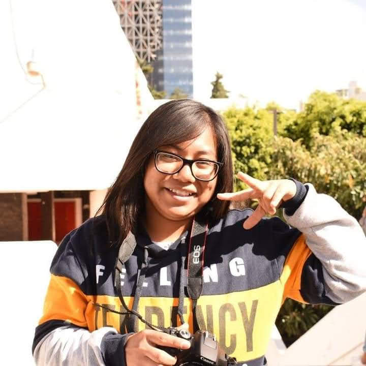

Maricarmen Corona Marin
Mi nombre es Maricarmen Corona Marín, tengo 21 años soy de la ciudad de Puebla, estudio la Licenciatura en Diseño Gráfico en la Benemérita Universidad Autónoma de Puebla, me considero una persona tranquila, que odia las injusticias, me fijo mucho en las acciones de los demás, daría todo por mi familia, me gusta admirar la naturaleza al igual que inspirarme de ella, me gustan mas los trabajos manuales que los digitales, me gusta ser independiente, aspiro terminar la licenciatura y después de ello trabajar un tiempo en alguna imprenta para así poder poner mi taller de serigrafía y artes varias.